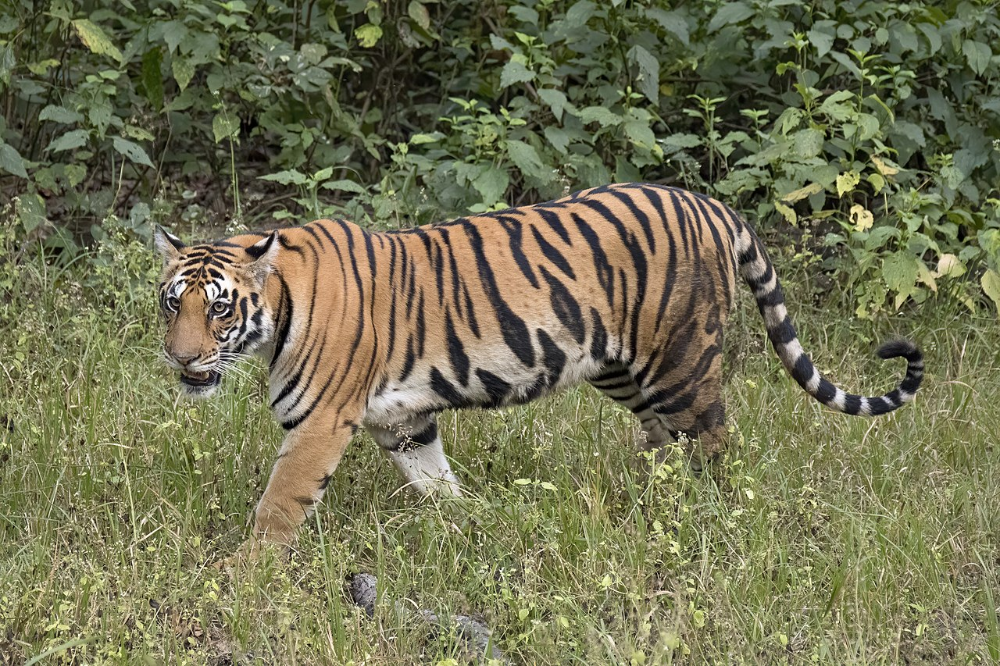

ABOUT TIGER
Bengal tiger
 The Bengal tiger is a tiger from a specific population of the Panthera tigris tigris subspecies that is native to the Indian subcontinent.[3] It is threatened by poaching, loss, and fragmentation of habitat, and was estimated at comprising fewer than 2,500 wild individuals by 2011. None of the Tiger Conservation Landscapes within its range is considered large enough to support an effective population of more than 250 adult individuals.
Tiger cubs stay with their mother for about two years, before they become independent and leave their mother's home range to establish their own.
Nepal
The tiger population in the Terai of Nepal is split into three isolated subpopulations that are separated by cultivation and densely settled habitat. The largest population lives in Chitwan National Park and in the adjacent Parsa National Park encompassing an area of 2,543 km2 (982 sq mi) of prime lowland forest. To the west, the Chitwan population is isolated from the one in Bardia National Park and adjacent unprotected habitat farther west, extending to within 15 km (9.3 mi) of the Shuklaphanta Wildlife Reserve, which harbours the smallest population.
Bhutan
EIn Bhutan, tigers have been documented in 17 of 18 districts. They inhabit the subtropical Himalayan foothills at an elevation of 200 m (660 ft) in the south to over 3,000 m (9,800 ft) in the temperate forests in the north. Their stronghold appears to be the country's central belt between the Mo River in the west and the Kulong River in the east ranging in elevation from 2,000 to 3,500 m (6,600 to 11,500 ft).Royal Manas and Jigme Singye Wangchuck National Parks form the largest contiguous tiger conservation area in Bhutan representing subtropical to alpine habitat types.[57] In 2010, camera traps recorded a tiger pair at elevations of 3,000 to 4,100 m (9,800 to 13,500 ft). As of 2015, the tiger population in Bhutan was estimated at 89 to 124 individuals in a survey area of 28,225 km2 (10,898 sq mi).